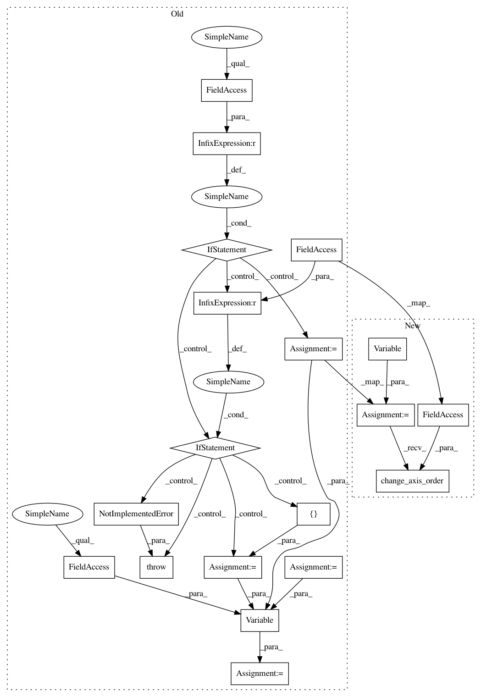

6f4c28e48a80d9774e2dd64bc442fc1ca528247f,src/graph_builder/graph/operators/deconvolution2d.py,Deconvolution2D,__call__,#Deconvolution2D#Any#Any#,32
Before Change
W2 = (x_shape_dict[Axis.W] - 1) * self.SW - 2 * self.PW + self.KW
C2 = w_shape_dict[Axis.N]
if x.axis_order == OrderNCHW:
var_shape = [N, C2, H2, W2]
elif x.axis_order == OrderNHWC:
var_shape = [N, H2, W2, C2]
else:
raise NotImplementedError()
y = Variable(var_shape, x.axis_order)
self.append_input("x", x)
self.append_input("w", w)
self.append_output("y", y)
return y,
After Change
W2 = (x_shape_dict[Axis.W] - 1) * self.SW - 2 * self.PW + self.KW
C2 = w_shape_dict[Axis.N]
y = Variable([N, C2, H2, W2], OrderNCHW)
y.change_axis_order(x.axis_order)
self.append_input("x", x)
self.append_input("w", w)
self.append_output("y", y)
In pattern: SUPERPATTERN
Frequency: 4
Non-data size: 19
Instances
Project Name: mil-tokyo/webdnn
Commit Name: 6f4c28e48a80d9774e2dd64bc442fc1ca528247f
Time: 2017-05-05
Author: y.kikura@gmail.com
File Name: src/graph_builder/graph/operators/deconvolution2d.py
Class Name: Deconvolution2D
Method Name: __call__
Project Name: mil-tokyo/webdnn
Commit Name: 5aa059e3213f530d2e423ad0cd77bf35846c121c
Time: 2017-05-05
Author: y.kikura@gmail.com
File Name: src/graph_builder/graph/operators/convolution2d.py
Class Name: Convolution2D
Method Name: __call__
Project Name: mil-tokyo/webdnn
Commit Name: 75da2f815f6cad443fd7c719dc098c4c34f030d8
Time: 2017-05-05
Author: y.kikura@gmail.com
File Name: src/graph_builder/graph/operators/average_pooling_2d.py
Class Name: AveragePooling2D
Method Name: __call__
Project Name: mil-tokyo/webdnn
Commit Name: b91e14aa1cc918181f970b561b8680b606401092
Time: 2017-05-05
Author: y.kikura@gmail.com
File Name: src/graph_builder/graph/operators/max_pooling_2d.py
Class Name: MaxPooling2D
Method Name: __call__